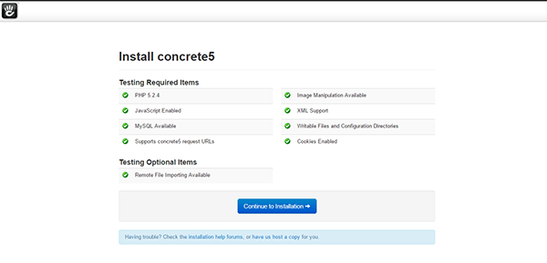
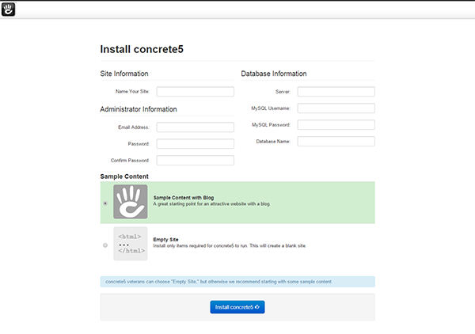
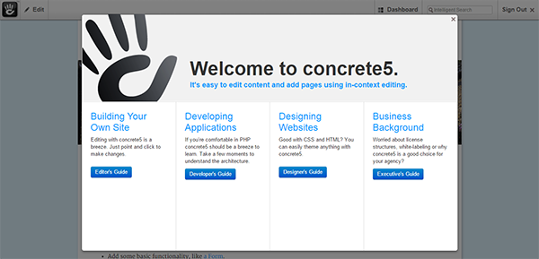

Install and configure concrete5 on your LAMP server - CentOS, Fedora, PHP, Applications
Install and configure concrete5 on your LAMP server – CentOS, Fedora
Difficulty: 1
Time: 20 minutes
Concrete5 is an open-source content management system (CMS) made in PHP. Concrete5 is easy to understand and learn. In this article, you will learn how to install and configure Concrete5 on CentOS and Fedora.
Before you proceed, you must have access to sudo privileges to perform the steps mentioned in this article. In addition, you will need to build a LAMP stack by referring the following articles:
Install the required dependency
- Install the unzip tool, which is required to extract the file.
sudo yum install unzip
- Install the PHP libraries for graphics and XML.
sudo yum install php-gd php-xml
- Restart the Apache services to make the changes effective.
sudo service httpd restart
Basic configuration
- Go into your
/var/www/html directory.
cd /var/www/html
- Download concrete5 from the official site:
sudo wget --trust-server-names http://www.concrete5.org/download_file/-/view/58379/8497/ -O concrete5.zip
- Extract the downloaded source using the following command:
sudo unzip concrete5.zip
- Rename the file
concrete5.6.2.1 as concrete5 to shorten the name.
sudo mv concrete5.6.2.1 concrete5
- Change directory to
concrete5.
cd concrete5
Create MySQL database
Create a blank MySQL database for backend operation.
- Access MySQL.
sudo mysql –u root –p
- Create your database for Concrete5.
CREATE DATABASE concrete5;
- Exit MySQL.
exit
Grant Permissions
- Change ownership of the following items to make them writable for concrete5.
sudo chown -R apache:apache /var/www/html/concrete5
- Change permissions of the following folders.
sudo chmod -R 755 /var/www/html/concrete5
Install Concrete5
- In your web browser, type in the public IP or URL of your concrete5 server as http://server_ip/concrete5, and then press the Enter key.
- On the installation page, click on Continue to Installation.

- Enter the required information for Site, Database, and Administrator, and then click Install Concrete5.

- After the installation process is complete, click Continue to your site.
You will be redirected to Concrete5's Welcome screen.

- Select any of the guides to get started.
Conclusion
In this article, you have learned to install and configure Concrete5 in CentOS and Fedora.